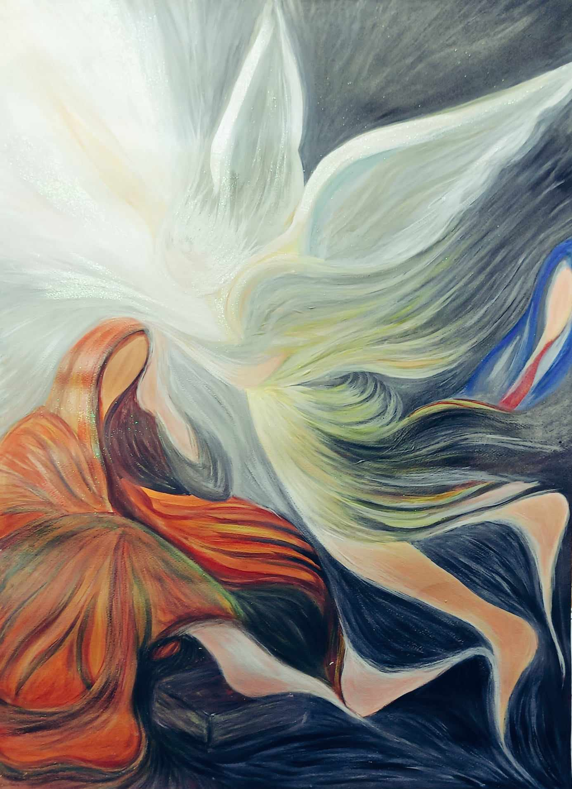

The Sisters of St Joseph of the Apparition are a missionary Congregation founded by St Emilie De Vialar in Gaillac France in 1832. At an early age Emilie was inspired to commit herself to God and became involved in works of charity in her home town.
She was called to found a missionary work with her first adventure being to Algeria in 1835. Later she sent Sisters to distant countries. Today the Sisters are present in twenty-four countries.

“Go with what you have and will receive, do all the good you can.”
St. Emilie de Vialar — Testimony of Sr Cyprienne to the Sisters departing for Burma, Picard p.241
{{ communityIntro }}
Today the Sisters are present in twenty-four countries across Europe, Africa, the Middle East, Asia, Oceania and Latin America. Tap a marker on the map — or a country below — to zoom in and see its communities. Where countries lie too close together to tap apart, one numbered marker stands for the group and opens the countries in it.